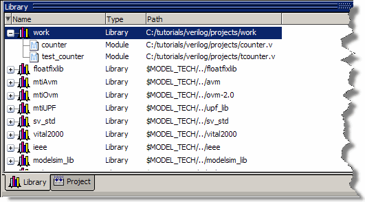

With the
Project settings defined and objects added to the project, you are
ready to compile the design.
Procedure
- Compile
the files.
- Right-click
either counter.v or tcounter.v in
the Project window and select from the pop-up
menu.
Questa SIM compiles both files and changes
the symbol in the Status column to a green check mark. A check mark
means the compile succeeded. If compile fails, the symbol will be
a red ’X’, and you will see an error message in the Transcript window.
- View the
design units.
- Click
the Library tab (Figure 1).
- Click
the ’+’ icon next to the work library.
You should
see two compiled design units, their types (modules in this case),
and the path to the underlying source files.
Figure 1. Library Window with
Expanded Library